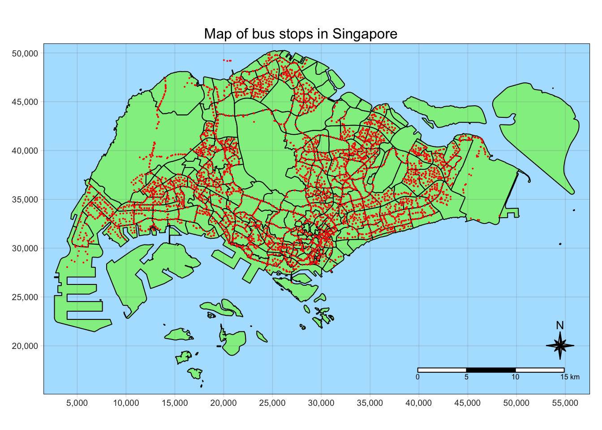
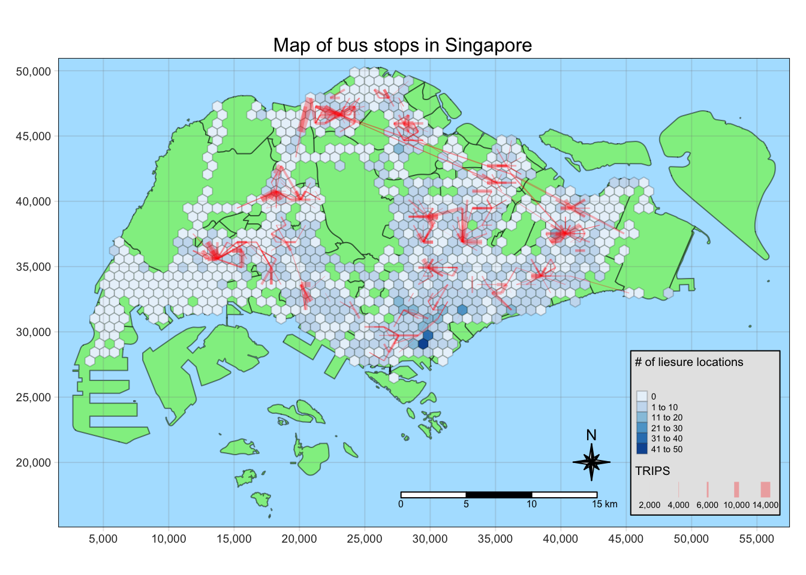
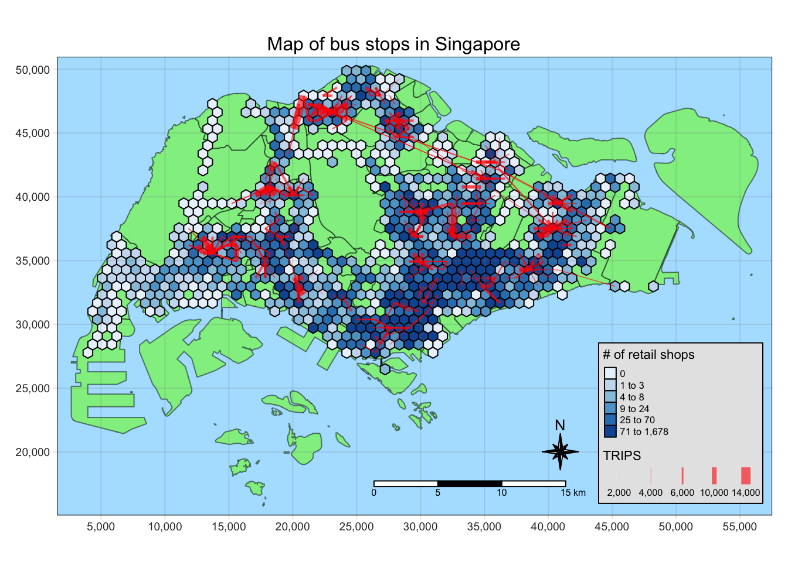
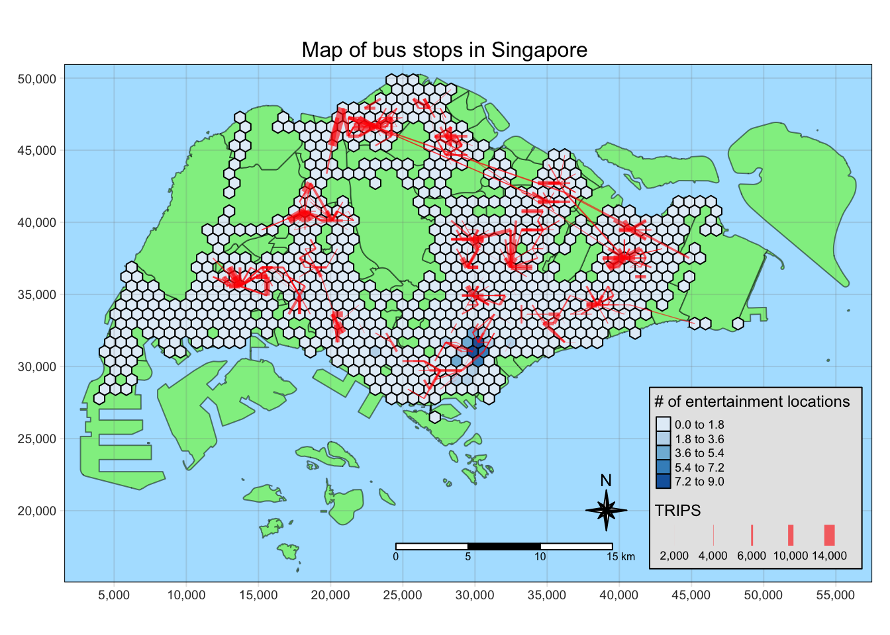
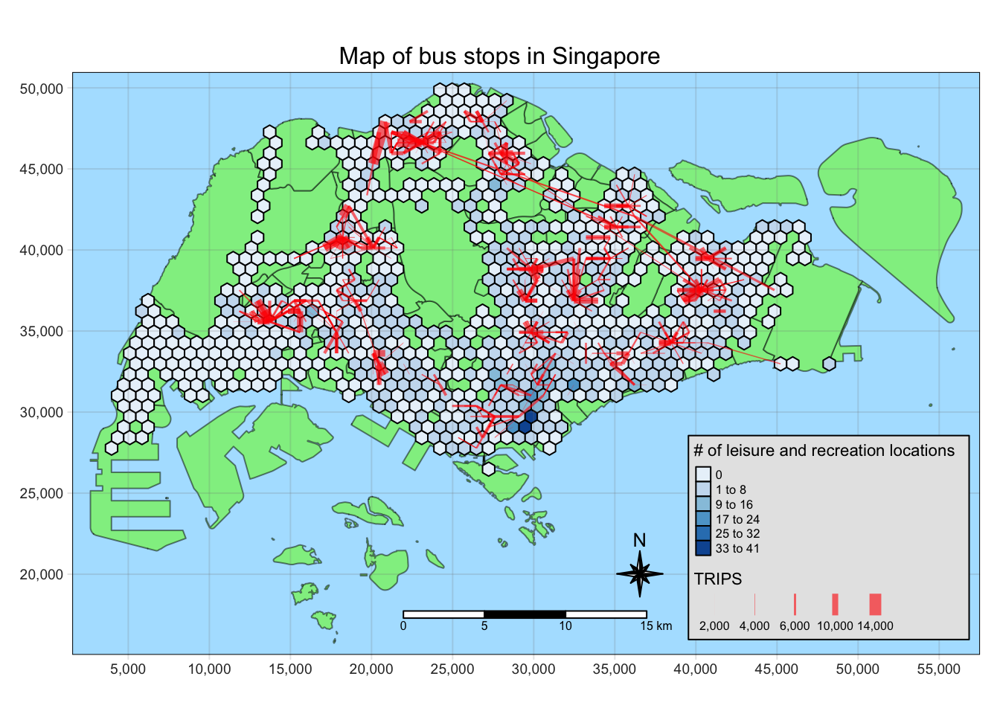

message <- "This code chunk executed"Take Home Exercise 2: A Case Study of Singapore Public Bus Commuter Flows
Overview
The aim of this exercise to study the bus commuter flow patterns in Singapore to gain insights that support decision-making.
We will be examining the weekend morning peak hours (11 AM - 2 PM) to figure out where people go during weekends and holidays.
We will also be the modelling the spatial interaction between the different locations in Singapore, related to the bus commuter patterns.
Check https://isss624-ay2023-24nov.netlify.app/take-home_ex02 for the full requirements of this exercise.
The Analysis
The analysis has two parts: (1) analyzing the spatial interactions between pairs of zone, (2) modelling the interaction.
We will create a honeycomb grid with hexagons with a distance of 375m from the center to the midpoint of the edge as the traffic analysis zone (TAZ). These hexagons will serve as the zones for our analysis.
We will visualize the interactions by plotting the flow lines corresponding to the number of trips between each pair of zones.
We need the following to start this analysis:
geometry with the traffic analysis zones
data about the number of trips between different pairs of zones
We will generate 4 log-based Poisson models:
origin-constrained model
destination-constrained model
unconstrained model
doubly-constrained model
We need the following to start this analysis:
geometry with the traffic analysis zones
propulsiveness variables, which influence the number of of trips originating from a zone
attractiveness variables, which influence bus commuters to make a trip a zone
data about the number of trips between different pairs of zones
distance between each pair of zone
We use the different variables to generate formula for each model, which will be explored further in their respective sections.
Once the models are generated, we will also compare the models as to which one best fits our data, using goodness of fit test or \(R^2\) test.
To perform our modelling, we need to identify the propulsiveness and attractiveness variables we will use for our model.
As our data will be based on real-world data, Passenger Volume By Origin Destination Bus Stops from LTA DataMall via API, we can think of possible factors based on our real-world experience.
As we are interested in the factors that influence weekend/holiday morning (11 AM - 2PM) peak period bus commuting patterns, we will consider the following variables.
Attractiveness variables are factors that can motivate people to go to their destinations. In our case, these are what motivates people to ride to their destination bus stop.
| Variable | Data Source | Motivation |
|---|---|---|
BUS_STOP_COUNT |
Bus Stop Location from LTA DataMall | Transferring to another bus to their end destination |
TRAIN_EXITS_COUNT |
Train Station Exit Point from LTA DataMall | Transferring to train to their end destination |
HDB_COUNT |
hdb.csv aspatial data provided on E-learn |
To meet up with friends/family |
ENTERTN_COUNT |
entertn.shp geospatial data provided on E-learn |
For recreation, spending time with friends/family |
F_AND_B_COUNT |
F&B.shp geospatial data provided on E-learn |
For spending time with friends/family |
LEISURE_COUNT |
Liesure&Recreation.shp geospatial data provided on E-learn |
For recreation, spending time with friends/family |
RETAIL_COUNT |
Retails.shp geospatial data provided on E-learn |
For errands, shopping, spending time with friends/family |
Propulsiveness variables are factors that influence people to ride the bus from specific zones. This is based on the number of potential passengers at the origin zones.
| Variable | Data Source | Motivation |
|---|---|---|
BUS_ALIGHT_COUNT |
Passenger Volume By Origin Destination Bus Stops from LTA DataMall via API | Passengers who alight from a bus stop within can transfer to another bus to reach |
TRAIN_ALIGHT_COUNT |
Passenger Volume By Train Stations from LTA DataMall via API | Passengers who alight from a train station can transfer to a bus to reach their final destination |
HDB_RESIDENT_COUNT |
hdb.csv aspatial data provided on E-learn |
Residents in an area are potential bus passengers as they leave their homes |
Data Outputs
To accomplish our analysis, we need to prepare the data with the following specifications.
For all our geospatial data, we will use the SVY21 projection it is appropriate for the Singapore context. Also, having a consistent projection will make it straightforward to use the functions from sfdep.
Managing our data
As this process is expected to have a lot of intermediate steps, Save, Load, and Data clear points are available to make our data wrangling more efficient.
Save point
This is where data is written as rds files using write_rds() for important data sets that will be used in later analysis. Examples are:
- Data we need to prepare for analysis
- Critical outputs of expensive calculations
- Cleaned up data for lightweight processing
Load point
This is where data is loaded from rds files using read_rds(). They were previously generated by the save point.
TIP: Skip to the load points to progress without running the code above it
Data clear point
This is where data that will not be used anymore are cleared. The data in RStudio environment will pile up and will make it more difficult to check the relevant data in each part.
We can set #| eval: false in code chunks if we want skip the clearing. For example, the code below won’t be run.
Setup
Using the data sources identified in Data Outputs, we will download the datasets and add them into our data/ directory.
We will also prepare the data/rds/ directory to save the data we from our Load point. After the setup we are left with the directory structure below.
Directory structure
Take-home_Ex2/data
├── aspatial
│ ├── hdb.csv
│ ├── origin_destination_bus_202310.csv
│ └── origin_destination_train_202310.csv
├── geospatial
│ ├── BusStop.cpg
│ ├── BusStop.dbf
│ ├── BusStop.lyr
│ ├── BusStop.prj
│ ├── BusStop.sbn
│ ├── BusStop.sbx
│ ├── BusStop.shp
│ ├── BusStop.shp.xml
│ ├── BusStop.shx
│ ├── F&B.cpg
│ ├── F&B.dbf
│ ├── F&B.prj
│ ├── F&B.qix
│ ├── F&B.qmd
│ ├── F&B.shp
│ ├── F&B.shx
│ ├── Liesure&Recreation.cpg
│ ├── Liesure&Recreation.dbf
│ ├── Liesure&Recreation.prj
│ ├── Liesure&Recreation.qmd
│ ├── Liesure&Recreation.shp
│ ├── Liesure&Recreation.shx
│ ├── MPSZ-2019.cpg
│ ├── MPSZ-2019.dbf
│ ├── MPSZ-2019.prj
│ ├── MPSZ-2019.qmd
│ ├── MPSZ-2019.shp
│ ├── MPSZ-2019.shx
│ ├── RapidTransitSystemStation.cpg
│ ├── RapidTransitSystemStation.dbf
│ ├── RapidTransitSystemStation.lyr
│ ├── RapidTransitSystemStation.prj
│ ├── RapidTransitSystemStation.sbn
│ ├── RapidTransitSystemStation.sbx
│ ├── RapidTransitSystemStation.shp
│ ├── RapidTransitSystemStation.shp.xml
│ ├── RapidTransitSystemStation.shx
│ ├── Retails.cpg
│ ├── Retails.dbf
│ ├── Retails.prj
│ ├── Retails.qix
│ ├── Retails.qmd
│ ├── Retails.shp
│ ├── Retails.shx
│ ├── entertn.cpg
│ ├── entertn.dbf
│ ├── entertn.prj
│ ├── entertn.qix
│ ├── entertn.qmd
│ ├── entertn.shp
│ └── entertn.shx
└── rdsWe will use the following R packages to run the code needed for data analysis.
These are the default setting we will use, and initial setup required for the environment.
tmap_modeto plot: for plotting simple mapstmap_styleto natural: for my preferred mapping styleset seed for reproducibility of results
Using the setup tasks identified above, we will now run the setup code.
We will label this code chunk with label: setup so it will always be run even if we reset our environment and start in the middle of the page
pacman::p_load(sf, sp, tmap, tidyverse, knitr, stplanr)
#pacman::p_load(sf, sp, tmap, tidyverse, knitr, sfdep, stplanr, reshape2)
tmap_mode("plot")
tmap_style("natural")
set.seed(1234)Data Wrangling
Using the Data Outputs previously identified, we generate the dependency map below.

Utility
We will first start by preparing the data needed for utility, [Singapore Boundary geometry (mpsz)] and [Honeycomb grid corresponding to bus stop locations (honeycomb)].
Importing the datasets
We will import the datasets needed to prepare the utility data.
We will import the Master Plan 2019 Subzone Boundary (Web) data set that has been used in class. We will only keep the SUBZONE_N column and the geometry as we will only use this as the base for our visualizations.
mpsz <- st_read(dsn = "data/geospatial",
layer = "MPSZ-2019") %>%
select(SUBZONE_N)Reading layer `MPSZ-2019' from data source
`/Users/kjcpaas/Documents/Grad School/ISSS624/Project/ISSS624/Take-home_Ex2/data/geospatial'
using driver `ESRI Shapefile'
Simple feature collection with 332 features and 6 fields
Geometry type: MULTIPOLYGON
Dimension: XY
Bounding box: xmin: 103.6057 ymin: 1.158699 xmax: 104.0885 ymax: 1.470775
Geodetic CRS: WGS 84
Correcting the projection
Visual inspection
We will do a quick visual inspection to check if the map has been imported as expected.
Show the code
tm_shape(mpsz) +
tm_polygons("lightgreen", title = "Singapore Boundary") +
tm_layout(main.title = "Map of Singapore",
main.title.position = "center",
main.title.size = 1.0,
legend.height = 0.35,
legend.width = 0.35,
frame = TRUE) +
tm_compass(type="8star", size = 2) +
tm_scale_bar() +
tm_grid(alpha = 0.2)
Save point
Let’s save this geometry as this is one of our Utility data outputs, [Singapore Boundary geometry (mpsz)].
write_rds(mpsz, "data/rds/mpsz.rds")Next, we need to import the bus stop data as we will generate the honeycomb grid based on locations with bus stops.
busstops <- st_read(dsn = "data/geospatial",
layer = "BusStop")Reading layer `BusStop' from data source
`/Users/kjcpaas/Documents/Grad School/ISSS624/Project/ISSS624/Take-home_Ex2/data/geospatial'
using driver `ESRI Shapefile'
Simple feature collection with 5161 features and 3 fields
Geometry type: POINT
Dimension: XY
Bounding box: xmin: 3970.122 ymin: 26482.1 xmax: 48284.56 ymax: 52983.82
Projected CRS: SVY21
Correcting the projection
We want to use SVY21 as the projection for this study as it is the projection used for local Singaporean context.
After the import, it shows that the Projected CRSis SVY21. However, checking the CRS with st_crs() tells a different story.
st_crs(busstops)Coordinate Reference System:
User input: SVY21
wkt:
PROJCRS["SVY21",
BASEGEOGCRS["WGS 84",
DATUM["World Geodetic System 1984",
ELLIPSOID["WGS 84",6378137,298.257223563,
LENGTHUNIT["metre",1]],
ID["EPSG",6326]],
PRIMEM["Greenwich",0,
ANGLEUNIT["Degree",0.0174532925199433]]],
CONVERSION["unnamed",
METHOD["Transverse Mercator",
ID["EPSG",9807]],
PARAMETER["Latitude of natural origin",1.36666666666667,
ANGLEUNIT["Degree",0.0174532925199433],
ID["EPSG",8801]],
PARAMETER["Longitude of natural origin",103.833333333333,
ANGLEUNIT["Degree",0.0174532925199433],
ID["EPSG",8802]],
PARAMETER["Scale factor at natural origin",1,
SCALEUNIT["unity",1],
ID["EPSG",8805]],
PARAMETER["False easting",28001.642,
LENGTHUNIT["metre",1],
ID["EPSG",8806]],
PARAMETER["False northing",38744.572,
LENGTHUNIT["metre",1],
ID["EPSG",8807]]],
CS[Cartesian,2],
AXIS["(E)",east,
ORDER[1],
LENGTHUNIT["metre",1,
ID["EPSG",9001]]],
AXIS["(N)",north,
ORDER[2],
LENGTHUNIT["metre",1,
ID["EPSG",9001]]]]As we can see EPSG value is 9001, which correspond to WGS84. We have to fix the projection by transforming to EPSG value of 3414, which corresponds to SVY21.
busstops <- st_transform(busstops, crs = 3414)
Visual inspection
We will do a quick visual inspection to check if the map has been imported as expected.
Show the code
tmap_style("natural")
tm_shape(mpsz) +
tm_polygons("lightgreen", title = "Singapore Boundary") +
tm_layout(main.title = "Map of bus stops in Singapore",
main.title.position = "center",
main.title.size = 1.0,
legend.height = 0.35,
legend.width = 0.35,
frame = TRUE) +
tm_shape(busstops) +
tm_dots(col = "red", size = 0.005, title = "Bus Stops") +
tm_compass(type="8star", size = 2) +
tm_scale_bar() +
tm_grid(alpha = 0.2)
The map shows that there are bus stops in our data set that are outside Singapore bounds (green area). We need to remove them as we are only interested in bus stops within Singapore.
Removing the bus stops outside Singapore
We can remove the points outside Singapore from our busstops data by using st_intersection().
We will use this as busstops contains points, the intersection of the 2 geometries will generate points corresponding to the bus stops within Singapore.
We will also just retain the BUS_STOP_N to remove the columns we do not need.
busstops <- busstops %>% st_intersection(mpsz) %>% select(BUS_STOP_N, )Visualizing again, all the bus stops are now within Singapore.
Show the code
tmap_style("natural")
tm_shape(mpsz) +
tm_polygons("lightgreen", title = "Singapore Boundary") +
tm_layout(main.title = "Map of bus stops in Singapore",
main.title.position = "center",
main.title.size = 1.0,
legend.height = 0.35,
legend.width = 0.35,
frame = TRUE) +
tm_shape(busstops) +
tm_dots(col = "red", size = 0.005, title = "Bus Stops") +
tm_compass(type="8star", size = 2) +
tm_scale_bar() +
tm_grid(alpha = 0.2)
Generating the honeycomb grid
Finally, we can generate the honeycomb grid using st_make_grid(), providing cellsize of 750m.
Calculating cellsize
Apothem is defined as the perpendicular from the center of a regular polygon to one of the sides.
The specification is this study requires hexagons to be 375 m from the center of the hexagon to the center of one of it’s edge.

As such, this corresponds to the length of 2 opposite apothems, which is 750 m.
The edge length is not the same as apothem. It is 433.013 mm.
\[ 375m/cos(30) = 433.013m \]
honeycomb <- busstops %>% st_make_grid(cellsize = 750,
what="polygons",
square = FALSE) %>%
st_sf() %>%
filter(lengths(st_intersects(geometry, busstops)) > 0)
Code Explanation
- st_make_grid()
-
Creates a grid that covers the entire bus stop geometry, including areas without bus stop.
- st_sf()
-
Converts to simple feature data set
- st_intersects()
-
Checks if the hexagons have bus stops
- filter()
-
Removes hexagons without bus stops
Let’s plot the map to visually inspect if the hexagons cover all the bus stop locations.
Show the code
tm_shape(mpsz) +
tm_polygons("green", title = "Singapore Boundary", alpha = 0.5) +
tm_shape(honeycomb) +
tm_polygons(col = "white", title = "Hexagons", alpha = 1) +
tm_layout(main.title = "Honeycomb grid corresponding to Singapore bus stops",
main.title.position = "center",
main.title.size = 1.0,
legend.height = 0.35,
legend.width = 0.35,
frame = TRUE) +
tm_compass(type="8star", size = 2, bg.color = "white", bg.alpha = 0.5) +
tm_scale_bar(bg.color = "white", bg.alpha = 0.5) +
tm_shape(busstops) +
tm_dots(col = "red", size = 0.001, title = "Bus Stops") +
tm_grid(alpha = 0.2)
Assigning id to each hexagon
Now that we have hexagons properly generated, we will assign id for each hexagon to be used as a unique identifier. We will store this id under the HEX_ID column, and can be used in joining data frames.
honeycomb$HEX_ID <- sprintf("H%04d", seq_len(nrow(honeycomb))) %>% as.factor()
kable(head(honeycomb))| geometry | HEX_ID |
|---|---|
| POLYGON ((3970.122 27348.13… | H0001 |
| POLYGON ((4345.122 27997.65… | H0002 |
| POLYGON ((4345.122 30595.72… | H0003 |
| POLYGON ((4720.122 28647.16… | H0004 |
| POLYGON ((4720.122 29946.2,… | H0005 |
| POLYGON ((4720.122 31245.24… | H0006 |
Save point
Let’s save honeycomb as it contains the main geometry we will use in analysis.
write_rds(honeycomb, "data/rds/honeycomb.rds")Spatial Interaction Analysis
Importing the datasets
We will import the datasets needed to prepare the data outputs, [Number of trips between 2 zones (od_hex)] and [Flow Lines (flowlines)].
Aside from the output of Utility, we also need to import the Passenger Volume By Origin Destination Bus Stops from LTA DataMall via API for the month of October 2023.
The data set is an aspatial data in csv format so we will use read_csv() to import the data.
We will use the October 2023 passenger data in this document. If you want to use dataset for another month, replace 202310 to the corresponding YYYYMM format.
odbus <- read_csv("data/aspatial/origin_destination_bus_202310.csv")
kable(head(odbus))| YEAR_MONTH | DAY_TYPE | TIME_PER_HOUR | PT_TYPE | ORIGIN_PT_CODE | DESTINATION_PT_CODE | TOTAL_TRIPS |
|---|---|---|---|---|---|---|
| 2023-10 | WEEKENDS/HOLIDAY | 16 | BUS | 04168 | 10051 | 3 |
| 2023-10 | WEEKDAY | 16 | BUS | 04168 | 10051 | 5 |
| 2023-10 | WEEKENDS/HOLIDAY | 14 | BUS | 80119 | 90079 | 3 |
| 2023-10 | WEEKDAY | 14 | BUS | 80119 | 90079 | 5 |
| 2023-10 | WEEKDAY | 17 | BUS | 44069 | 17229 | 4 |
| 2023-10 | WEEKENDS/HOLIDAY | 17 | BUS | 20281 | 20141 | 1 |
Generating the O-D trip data by hexagon level
Filtering the relevant data
We only need the data for the weekend morning peak period, which is from 11 AM - 2 PM on weekends and holidays. As such, we will filter the data for the relevant hours.
We will also rename the ORIGIN_PT_CODE and DESTINATION_PT_CODE to be consistent with the naming with busstops as these columns can be associated to busstops’s BUS_STOP_N
How to filter data by TIME_PER_HOUR
The TIME_PER_HOUR in data set covers the data from the start to the end of the hour in 24-hour format, i.e. when TIME_PER_HOUR = 13, this means bus taps from 1:00 PM ton1:59:59PM.
Hence, if we want to get 11AM to 2PM data, we will filter by:
TIME_PER_HOUR >= 11 & TIME_PER_HOUR < 14od_trips <- odbus %>%
filter(DAY_TYPE == "WEEKENDS/HOLIDAY") %>%
filter( TIME_PER_HOUR >= 11 &
TIME_PER_HOUR < 14
) %>%
group_by(ORIGIN_PT_CODE, DESTINATION_PT_CODE) %>%
summarise(TRIPS = sum(TOTAL_TRIPS)) %>%
rename(
ORIG_BUS_STOP_N = ORIGIN_PT_CODE,
DEST_BUS_STOP_N = DESTINATION_PT_CODE
)
kable(head(od_trips))| ORIG_BUS_STOP_N | DEST_BUS_STOP_N | TRIPS |
|---|---|---|
| 01012 | 01112 | 204 |
| 01012 | 01113 | 129 |
| 01012 | 01121 | 95 |
| 01012 | 01211 | 91 |
| 01012 | 01311 | 152 |
| 01012 | 01559 | 5 |
Data clear point
We do not need odbus anymore as we already extracted the data relevant to our analysis.
rm(odbus)Generating lookup table for bus stop to associated hexagon
To connect the trip data to the their corresponding hexagon, we need to create a lookup table. This will serve as a glue in associating the aspatial od_trips data frame to the honeycomb data frame.
This can be done via st_intersection().
bs_hex <- st_intersection(busstops, honeycomb) %>%
st_drop_geometry() %>%
select(c(BUS_STOP_N, HEX_ID))
kable(head(bs_hex))| BUS_STOP_N | HEX_ID | |
|---|---|---|
| 3269 | 25059 | H0001 |
| 2570 | 25751 | H0002 |
| 254 | 26379 | H0003 |
| 2403 | 26369 | H0003 |
| 2829 | 25741 | H0004 |
| 1715 | 26399 | H0005 |
Joining od_trips and bs_hex
Next, we need to associate each origin bus stop and destination bus stop to their corresponding hexagons.
We can use that by doing inner_join() twice, once for the origin and another for the destination.
Why inner_join() instead of left_join()?
We will use inner_join as there are BUS_STOP_N values in od_trips data that are not in bs_hex.
c(
od_trips$ORIG_BUS_STOP_N[!(od_trips$ORIG_BUS_STOP_N %in% bs_hex$BUS_STOP_N)],
od_trips$DEST_BUS_STOP_N[!(od_trips$DEST_BUS_STOP_N %in% bs_hex$BUS_STOP_N)]
) %>% unique() %>% length()[1] 59There are 59 bus stops in od_trips that are not in bs_hex. 5 of these can be attributed the bus stops we removed due to them being out in Singapore. Others may be due to the BusStops data set not having complete information.
The proper way to handle this is to validate the existence of each of these bus stops and look at public sources (e.g. Google Maps, LTA data) and add coordinate data. However, as we do not have much to do this task, we have to remove these bus stops from our analysis as we do not have geospatial data to associate to the hexagons from the data sets available to us.
Therefore, we will use inner_join to keep only the observations in trips with the matching bus stops in bs_hex.
od_trips_w_hex <- od_trips %>%
inner_join(bs_hex,
by = c("ORIG_BUS_STOP_N" = "BUS_STOP_N")) %>%
rename(ORIG_HEX_ID = HEX_ID) %>%
inner_join(bs_hex,
by = c("DEST_BUS_STOP_N" = "BUS_STOP_N")) %>%
rename(DEST_HEX_ID = HEX_ID)
kable(head(od_trips_w_hex))| ORIG_BUS_STOP_N | DEST_BUS_STOP_N | TRIPS | ORIG_HEX_ID | DEST_HEX_ID |
|---|---|---|---|---|
| 01012 | 01112 | 204 | H0515 | H0527 |
| 01012 | 01113 | 129 | H0515 | H0527 |
| 01012 | 01121 | 95 | H0515 | H0550 |
| 01012 | 01211 | 91 | H0515 | H0550 |
| 01012 | 01311 | 152 | H0515 | H0561 |
| 01012 | 01559 | 5 | H0515 | H0550 |
Aggregating data by hexagon
Next, we will perform aggregations by ORIG_HEX_ID and DEST_HEX_ID to have an aggregated sum of trips by hexagon instead of bus stops.
od_hex <- od_trips_w_hex %>%
group_by(ORIG_HEX_ID, DEST_HEX_ID) %>%
summarise(TRIPS = sum(TRIPS))
kable(head(od_hex))| ORIG_HEX_ID | DEST_HEX_ID | TRIPS |
|---|---|---|
| H0002 | H0016 | 1 |
| H0002 | H0017 | 2 |
| H0002 | H0032 | 16 |
| H0003 | H0005 | 1 |
| H0003 | H0022 | 56 |
| H0003 | H0028 | 10 |
Save point
Let’s save od_hex as it contains the TRIP data needed to visualize flow data and do spatial interaction modelling. Take note that this includes intra-zonal trips.
write_rds(od_hex, "data/rds/od_hex202310.rds")
Data clear point
We do not need bs_hex, od_trips_w_hex anymore as we already have the necessary data for doing hexagon-based analysis in od_hex.
rm(bs_hex)
rm(od_trips_w_hex)We will still keep busstops and od_trips as we need these for calculating attractiveness and propulsiveness variables.
Generating the flow lines
First, we will generate the flow lines using od2line(). honeycomb will be supplied as the zone as it contains the hexagons we are using as the traffic analysis zones.
flowlines <- od_hex %>% od2line(
honeycomb,
zone_code = "HEX_ID")Initial inspection of the flow lines
Next, we will do an initial inspection of the flow lines to check if they have been generated correctly.
Show the code
tm_shape(mpsz) +
tm_polygons("green", title = "Singapore Boundary", alpha = 0.5) +
tm_shape(honeycomb) +
tm_polygons(col = "white", title = "Hexagons", alpha = 1) +
tm_shape(flowlines) +
tm_lines(lwd = "TRIPS",
style = "quantile",
col = "red",
scale = c(0.1, 1, 3, 5, 7),
title.lwd = "# of bus trips",
alpha = 0.8) +
tm_layout(main.title = "Bus Passenger flow for Weekends/Holidays 11 AM - 2PM (October 2023)",
main.title.position = "center",
main.title.size = 1.0,
legend.height = 0.35,
legend.width = 0.35,
frame = TRUE) +
tm_compass(type="8star", size = 2, bg.color = "white", bg.alpha = 0.5) +
tm_scale_bar(bg.color = "white", bg.alpha = 0.5) +
tm_grid(alpha = 0.2)
Insights
The flow lines are sparse at the West side of Singapore, the Jurong and Choa Chu Kang areas. This is consistent with the observations that we have in the Take-home Exercise 1 that these areas are least busy in terms of bus rides.
We can also notice that the thickest flow lines is between Woodlands Chaeckpoint and Kranji Station. There are not residential areas so our hypothesis that connecting transport points influence the bus passenger flow.
Save point
Let’s save flowlines as it contains the data for spatial interaction that we will use later on.
write_rds(flowlines, "data/rds/flowlines202310.rds")Spatial Interaction Modelling
Next, we will prepare the data needed for spatial interaction modelling. Some of these are straightforward to get, especially those of attractiveness variables. Additional steps are needed for more complex data sets, like those needed for propulsiveness variables. We will derive those in a separate section.
Attractiveness variables
We will first initiate attractiveness from honeycomb.
attractiveness <- honeycombFor all the variables, we only need to count the number of each location types for each hexagon. We will use a combination of lengths() and st_intersects() to derive this value.
attractiveness$BUS_STOP_COUNT <- lengths(
st_intersects(attractiveness, busstops))entertn <- st_read(dsn = "data/geospatial", layer = "entertn")Reading layer `entertn' from data source
`/Users/kjcpaas/Documents/Grad School/ISSS624/Project/ISSS624/Take-home_Ex2/data/geospatial'
using driver `ESRI Shapefile'
Simple feature collection with 114 features and 3 fields
Geometry type: POINT
Dimension: XY
Bounding box: xmin: 10809.34 ymin: 26528.63 xmax: 41600.62 ymax: 46375.77
Projected CRS: SVY21 / Singapore TM
Visual Inspection
As we haven’t used this dataset before, we will do a quick visual inspection to check if the points are within Singapore.
Show the code
tm_shape(mpsz) +
tm_polygons("green", title = "Singapore Boundary", alpha = 0.5) +
tm_shape(honeycomb) +
tm_polygons(col = "white", title = "Hexagons", alpha = 1) +
tm_layout(main.title = "Map of Entertainment Spots in Singapore",
main.title.position = "center",
main.title.size = 1.0,
legend.height = 0.35,
legend.width = 0.35,
frame = TRUE) +
tm_compass(type="8star", size = 2, bg.color = "white", bg.alpha = 0.5) +
tm_scale_bar(bg.color = "white", bg.alpha = 0.5) +
tm_shape(entertn) +
tm_dots(col = "red", size = 0.005, title = "Entertainment Spots") +
tm_grid(alpha = 0.2)
attractiveness$ENTERTN_COUNT <- lengths(st_intersects(attractiveness, entertn))f_and_b <- st_read(dsn = "data/geospatial", layer = "F&B")Reading layer `F&B' from data source
`/Users/kjcpaas/Documents/Grad School/ISSS624/Project/ISSS624/Take-home_Ex2/data/geospatial'
using driver `ESRI Shapefile'
Simple feature collection with 1919 features and 3 fields
Geometry type: POINT
Dimension: XY
Bounding box: xmin: 6010.495 ymin: 25343.27 xmax: 45462.43 ymax: 48796.21
Projected CRS: SVY21 / Singapore TM
Visual Inspection
As we haven’t used this dataset before, we will do a quick visual inspection to check if the points are within Singapore.
Show the code
tm_shape(mpsz) +
tm_polygons("green", title = "Singapore Boundary", alpha = 0.5) +
tm_shape(honeycomb) +
tm_polygons(col = "white", title = "Hexagons", alpha = 1) +
tm_layout(main.title = "Map of F&B Establishments in Singapore",
main.title.position = "center",
main.title.size = 1.0,
legend.height = 0.35,
legend.width = 0.35,
frame = TRUE) +
tm_compass(type="8star", size = 2, bg.color = "white", bg.alpha = 0.5) +
tm_scale_bar(bg.color = "white", bg.alpha = 0.5) +
tm_shape(f_and_b) +
tm_dots(col = "red", size = 0.005, title = "F&B Establishments Spots") +
tm_grid(alpha = 0.2)
attractiveness$F_AND_B_COUNT <- lengths(st_intersects(attractiveness, f_and_b))leis_rec <- st_read(dsn = "data/geospatial", layer = "Liesure&Recreation")Reading layer `Liesure&Recreation' from data source
`/Users/kjcpaas/Documents/Grad School/ISSS624/Project/ISSS624/Take-home_Ex2/data/geospatial'
using driver `ESRI Shapefile'
Simple feature collection with 1217 features and 30 fields
Geometry type: POINT
Dimension: XY
Bounding box: xmin: 6010.495 ymin: 25134.28 xmax: 48439.77 ymax: 50078.88
Projected CRS: SVY21 / Singapore TM
Visual Inspection
As we haven’t used this dataset before, we will do a quick visual inspection to check if the points are within Singapore.
Show the code
tm_shape(mpsz) +
tm_polygons("green", title = "Singapore Boundary", alpha = 0.5) +
tm_shape(honeycomb) +
tm_polygons(col = "white", title = "Hexagons", alpha = 1) +
tm_layout(main.title = "Map of Leisure & Recreation Spots in Singapore",
main.title.position = "center",
main.title.size = 1.0,
legend.height = 0.35,
legend.width = 0.35,
frame = TRUE) +
tm_compass(type="8star", size = 2, bg.color = "white", bg.alpha = 0.5) +
tm_scale_bar(bg.color = "white", bg.alpha = 0.5) +
tm_shape(leis_rec) +
tm_dots(col = "red", size = 0.005, title = "Leisure & Recreation Spots") +
tm_grid(alpha = 0.2)
attractiveness$LEISURE_COUNT <- lengths(st_intersects(attractiveness, leis_rec))retail <- st_read(dsn = "data/geospatial", layer = "Retails")Reading layer `Retails' from data source
`/Users/kjcpaas/Documents/Grad School/ISSS624/Project/ISSS624/Take-home_Ex2/data/geospatial'
using driver `ESRI Shapefile'
Simple feature collection with 37635 features and 3 fields
Geometry type: POINT
Dimension: XY
Bounding box: xmin: 4737.982 ymin: 25171.88 xmax: 48265.04 ymax: 50135.28
Projected CRS: SVY21 / Singapore TM
Visual Inspection
As we haven’t used this dataset before, we will do a quick visual inspection to check if the points are within Singapore.
Show the code
tm_shape(mpsz) +
tm_polygons("green", title = "Singapore Boundary", alpha = 0.5) +
tm_shape(honeycomb) +
tm_polygons(col = "white", title = "Hexagons", alpha = 1) +
tm_layout(main.title = "Map of Retail Outlets in Singapore",
main.title.position = "center",
main.title.size = 1.0,
legend.height = 0.35,
legend.width = 0.35,
frame = TRUE) +
tm_compass(type="8star", size = 2, bg.color = "white", bg.alpha = 0.5) +
tm_scale_bar(bg.color = "white", bg.alpha = 0.5) +
tm_shape(retail) +
tm_dots(col = "red", size = 0.005, title = "Retail Outlets") +
tm_grid(alpha = 0.2)
attractiveness$RETAIL_COUNT <- lengths(st_intersects(attractiveness, retail))train_exits <- st_read(dsn = "data/geospatial", layer = "Train_Station_Exit_Layer")Reading layer `Train_Station_Exit_Layer' from data source
`/Users/kjcpaas/Documents/Grad School/ISSS624/Project/ISSS624/Take-home_Ex2/data/geospatial'
using driver `ESRI Shapefile'
Simple feature collection with 565 features and 2 fields
Geometry type: POINT
Dimension: XY
Bounding box: xmin: 6134.086 ymin: 27499.7 xmax: 45356.36 ymax: 47865.92
Projected CRS: SVY21
Correcting the projection
We want to use SVY21 as the projection for this study as it is the projection used for local Singaporean context.
After the import, it shows that the Projected CRS is SVY21. However, checking the CRS with st_crs() tells a different story.
st_crs(train_exits)Coordinate Reference System:
User input: SVY21
wkt:
PROJCRS["SVY21",
BASEGEOGCRS["WGS 84",
DATUM["World Geodetic System 1984",
ELLIPSOID["WGS 84",6378137,298.257223563,
LENGTHUNIT["metre",1]],
ID["EPSG",6326]],
PRIMEM["Greenwich",0,
ANGLEUNIT["Degree",0.0174532925199433]]],
CONVERSION["unnamed",
METHOD["Transverse Mercator",
ID["EPSG",9807]],
PARAMETER["Latitude of natural origin",1.36666666666667,
ANGLEUNIT["Degree",0.0174532925199433],
ID["EPSG",8801]],
PARAMETER["Longitude of natural origin",103.833333333333,
ANGLEUNIT["Degree",0.0174532925199433],
ID["EPSG",8802]],
PARAMETER["Scale factor at natural origin",1,
SCALEUNIT["unity",1],
ID["EPSG",8805]],
PARAMETER["False easting",28001.642,
LENGTHUNIT["metre",1],
ID["EPSG",8806]],
PARAMETER["False northing",38744.572,
LENGTHUNIT["metre",1],
ID["EPSG",8807]]],
CS[Cartesian,2],
AXIS["(E)",east,
ORDER[1],
LENGTHUNIT["metre",1,
ID["EPSG",9001]]],
AXIS["(N)",north,
ORDER[2],
LENGTHUNIT["metre",1,
ID["EPSG",9001]]]]As we can see EPSG value is 9001, which correspond to WGS84. We have to fix the projection by transforming to EPSG value of 3414, which corresponds to SVY21.
train_exits <- st_transform(train_exits, crs = 3414)
Visual Inspection
As we haven’t used this dataset before, we will do a quick visual inspection to check if the points are within Singapore.
Show the code
tm_shape(mpsz) +
tm_polygons("green", title = "Singapore Boundary", alpha = 0.5) +
tm_shape(honeycomb) +
tm_polygons(col = "white", title = "Hexagons", alpha = 1) +
tm_layout(main.title = "Map of Train Station Exits in Singapore",
main.title.position = "center",
main.title.size = 1.0,
legend.height = 0.35,
legend.width = 0.35,
frame = TRUE) +
tm_compass(type="8star", size = 2, bg.color = "white", bg.alpha = 0.5) +
tm_scale_bar(bg.color = "white", bg.alpha = 0.5) +
tm_shape(train_exits) +
tm_dots(col = "red", size = 0.005, title = "Train Station Exits") +
tm_grid(alpha = 0.2)attractiveness$TRAIN_EXITS_COUNT <- lengths(st_intersects(attractiveness, train_exits))kable(head(attractiveness))| geometry | HEX_ID | BUS_STOP_COUNT | ENTERTN_COUNT | F_AND_B_COUNT | LEISURE_COUNT | RETAIL_COUNT | TRAIN_EXITS_COUNT |
|---|---|---|---|---|---|---|---|
| POLYGON ((3970.122 27348.13… | H0001 | 1 | 0 | 0 | 0 | 0 | 0 |
| POLYGON ((4345.122 27997.65… | H0002 | 1 | 0 | 0 | 0 | 0 | 0 |
| POLYGON ((4345.122 30595.72… | H0003 | 2 | 0 | 0 | 0 | 0 | 0 |
| POLYGON ((4720.122 28647.16… | H0004 | 1 | 0 | 0 | 0 | 0 | 0 |
| POLYGON ((4720.122 29946.2,… | H0005 | 4 | 0 | 0 | 0 | 5 | 0 |
| POLYGON ((4720.122 31245.24… | H0006 | 1 | 0 | 0 | 0 | 0 | 0 |